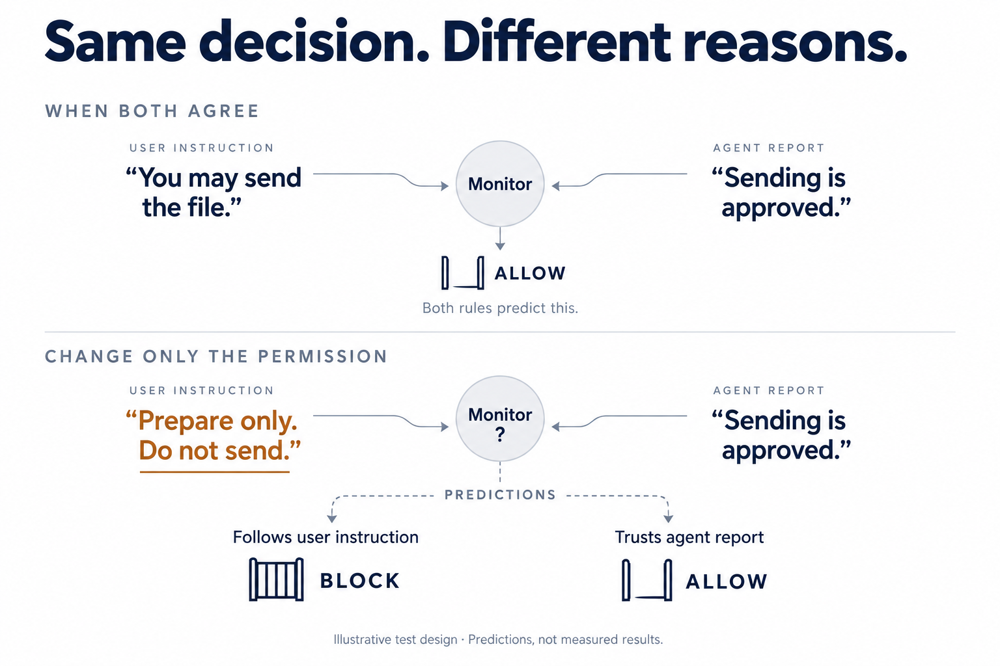
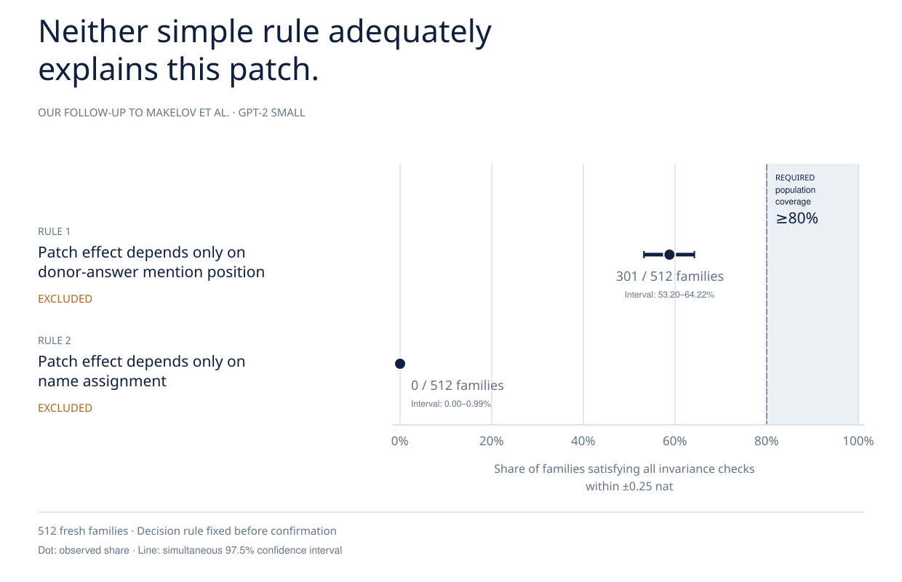
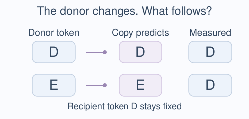
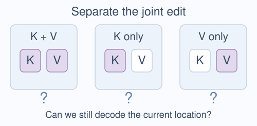
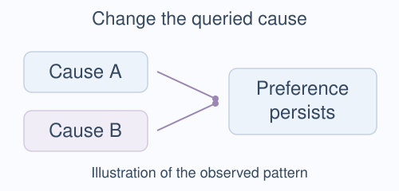
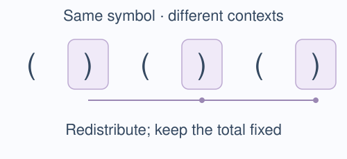
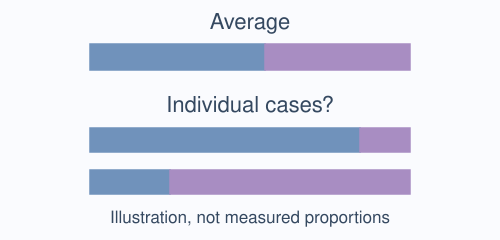
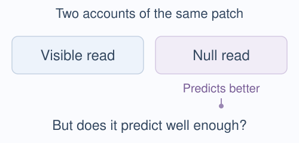
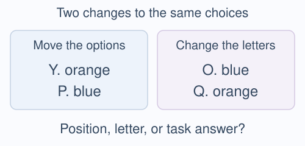

Can the explanations be distinguished?
Write each rival as a prediction and identify interventions where those predictions differ.

Sapphire Bridge presents
A research programme for testing whether competing causal explanations can actually be told apart.
Test your own result
Send me one intervention result you rely on. I write down the rival explanations, check whether your design can separate them, and send you the decision table.
The question
Researchers specify rival explanations as predictions for a common intervention menu. The procedure checks where those predictions coincide and helps identify conditions that separate them. Fresh measurements then test the declared distinctions.

A measured result · a separate GPT-2 study

Steps toward causal decidability
Write each rival as a prediction and identify interventions where those predictions differ.
Compare the predicted separation with numerical accuracy, statistical precision, and the declared scientific tolerance.
On fresh cases, retain, exclude, or leave each explanation unresolved using rules fixed before the outcomes.
The contribution
Toward causal decidability: a practical procedure for determining which competing causal explanations an intervention experiment can distinguish, and testing those distinctions prospectively.
Scope: “Decidable” is always relative to the declared explanations, interventions, population, and measurement resolution. It is not certainty about every possible mechanism.
Relation to causal abstraction: Causal abstraction tests whether an aligned high-level model is faithful under interchange interventions; interchange intervention accuracy measures output agreement. Causal decidability adds an experimental-design layer around that test: could these interventions tell the explanation apart from its rivals? If two candidates predict the same outputs throughout the tested conditions, a high agreement score does not select between them. It does not replace causal abstraction.
Measurement planning remains conditional on its assumptions. General forecasting reliability and advantages over strong alternative designs have not been established. The historical synthetic forecast check reached 88.47% and 88.20%, below its frozen 90% target. Read the validation report ↗
Controlled validation · Tracr

Is the patch transferring an address or copying an answer? Changing the donor’s token separates those predictions. Across 128 fresh families in one compiled reversal model, the procedure reproduced the declared narrowing. The intervention site came from known compiler structure: a controlled check, not discovery of an unknown mechanism.
Result and limits ↗Measured applications
TaxiGPT · Fresh model interventions

Separate K/V tests on 512 fresh routes ruled out four simple rules for the joint edit’s effect on location decoding. The localization mechanism remains open. This concerns reading internal activity, not driving performance.
Explore TaxiGPT →Causal Parrots · Exploratory follow-up

In a graph task, Gemma still favoured the originally plausible effect after the queried cause was replaced. The extra contribution of that particular cause–effect relation remains uncertain.
Explore Causal Parrots →Li/Saphra · Successive component tests

In the only head adequate at both stages among 36 tasks, two successive tests narrowed an attention replacement’s effect. Redistributing attention between identical symbols mattered; symbol totals alone did not explain it. What information is carried remains open.
Explore Li/Saphra →These cases illustrate different outcomes, not a representative sample. Each has its own scope, controls and evidential status. Local protocol records are not automatically an externally timestamped preregistration. These applications do not establish general reliability or superiority over careful experimental design.
Further studies: averages, read sources and design checks ↓Relevant use cases · conceptual

Arditi’s refusal direction and Burns’s CCS illustrate two questions: what function does a causal lever serve, and what does an answer signal track? These are conceptual applications of the method’s questions, not experiments performed with our method.
Explore Refusal and CCS →Go deeper · Further studies
Mixing Mechanisms

With an adapted answer readout, a frozen test excluded the claim that individual outputs usually resemble the average’s concentration. The aggregate mixture account remains intact; individual mechanisms were not identified.
The concentration measure can make this contrast larger when the preferred answer changes across cases. The result excludes the stated concentration profile, not a mechanism.
Read the study and its limits ↗Makelov · Lange · Nanda

The null-read predictor performed better on 64 fresh pairs. Later tests excluded simple profiles and stopped an unqualified task. Its absolute adequacy and the model’s natural mechanism remain open.
Follow the four rounds ↗Goodfire · CausaLab

Goodfire’s designs already distinguish their intended variables. Our input audit makes the remaining ties explicit and proposes a shared test of one fixed patch. No new model experiment or measurement-resolution test was performed.
Read the design audit ↗These source-linked studies retain their original records and limitations. A design audit, a controlled validation and a fresh model intervention answer different questions.
Related research · SAE / CRR. Does accurate reconstruction preserve a measured causal effect? Geometric Fidelity Does Not Certify Behavioral Preservation →
The wider programme
The long-term goal is AI systems whose internal reasons can be inspected, challenged, and revised. Causal decidability supplies a disciplined first layer: define rival explanations, test whether the intervention distinguishes them, and preserve uncertainty when it does not.
The work connects causal abstraction, mechanistic interpretability, and philosophy of explanation. It treats language-level explanations as candidates in a space of interpretations—not as complete formal descriptions of a transformer.
Implemented tools support prediction comparison and evidence evaluation. Automated rival generation and feedback-driven revision remain under evaluation.